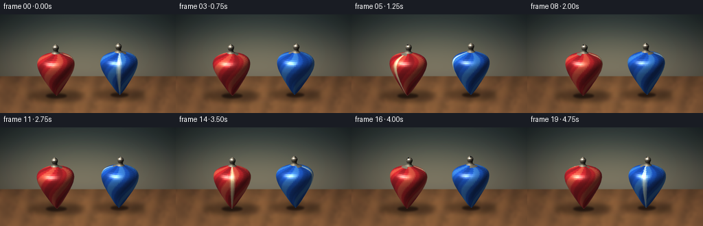
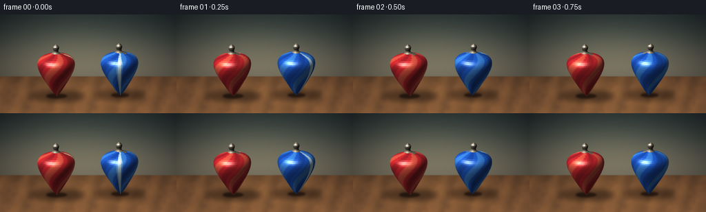
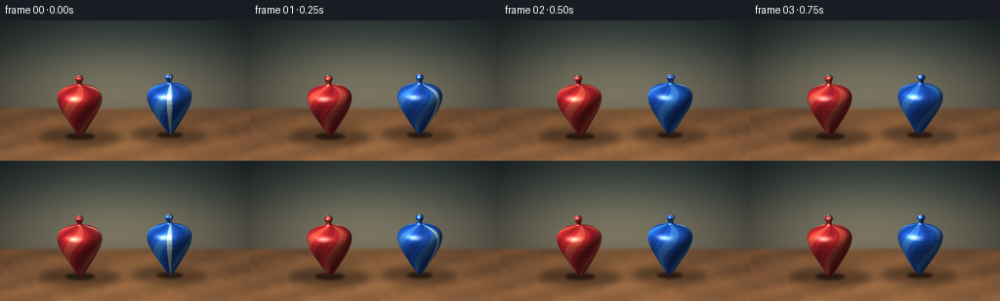
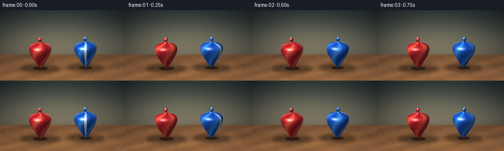
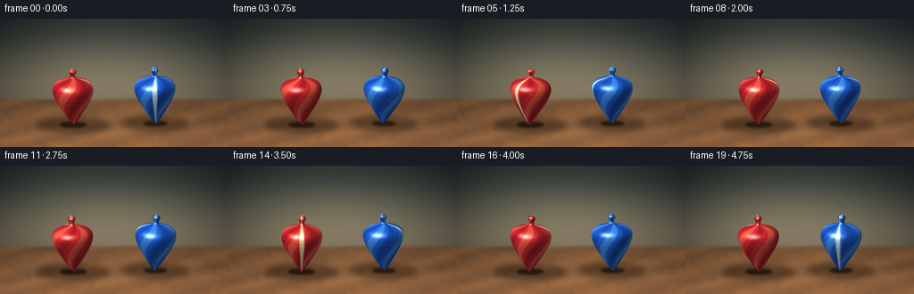
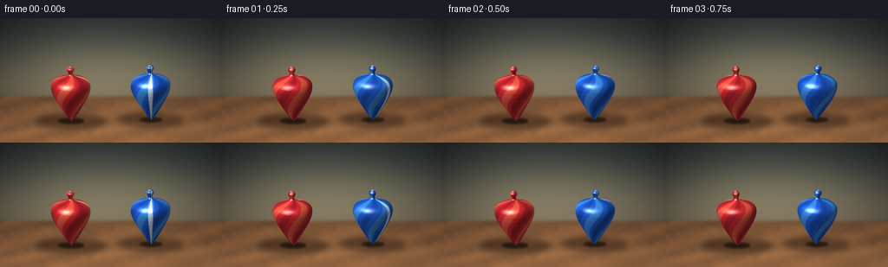
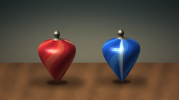
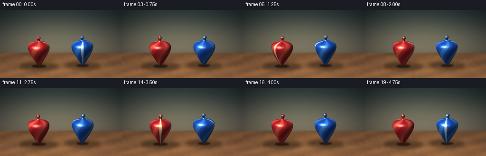
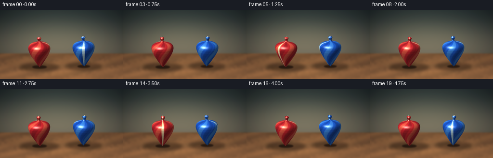

CODING AGENTS AS PIXEL WORLD MODELS
traex/DeepSeek-V4.1-Flash · instance_preservation_0038
点击播放 · 原生 RGB 像素
逐轮保存的候选
回放视频、检查图与代码变化。
每份候选均可单独播放。实际图片检查记录在下方工具轨迹中。
候选 01播放与检查图
点击播放 · 原生 RGB 像素


展开代码变化
--- 上一保存版本
+++ 本次保存版本
@@ -0,0 +1,363 @@
+from __future__ import annotations
+
+import math
+from pathlib import Path
+
+import numpy as np
+from PIL import Image, ImageDraw, ImageFilter
+
+import artifact_io
+
+
+WIDTH = 256
+HEIGHT = 144
+FRAME_COUNT = 20
+FPS = 4.0
+SS = 4
+W = WIDTH * SS
+H = HEIGHT * SS
+
+
+def smoothstep(edge0: float, edge1: float, value: np.ndarray) -> np.ndarray:
+ t = np.clip((value - edge0) / (edge1 - edge0), 0.0, 1.0)
+ return t * t * (3.0 - 2.0 * t)
+
+
+def make_background() -> Image.Image:
+ yy, xx = np.mgrid[0:H, 0:W].astype(np.float32)
+ nx = xx / W
+ ny = yy / H
+ horizon = 0.625
+
+ wall_top = np.array([43, 55, 57], dtype=np.float32)
+ wall_low = np.array([105, 101, 88], dtype=np.float32)
+ wall_mix = smoothstep(0.0, horizon, ny)[..., None]
+ wall = wall_top * (1.0 - wall_mix) + wall_low * wall_mix
+
+ glow = (
+ 0.85 * np.exp(-(((nx - 0.34) / 0.34) ** 2 + ((ny - 0.33) / 0.35) ** 2))
+ + 0.42 * np.exp(-(((nx - 0.71) / 0.27) ** 2 + ((ny - 0.34) / 0.30) ** 2))
+ )
+ wall += glow[..., None] * np.array([23, 20, 12], dtype=np.float32)
+
+ vignette = np.clip(1.0 - 0.55 * (((nx - 0.5) / 0.72) ** 2 + ((ny - 0.44) / 0.82) ** 2), 0.48, 1.0)
+ wall *= vignette[..., None]
+
+ # A low-resolution wood texture keeps the grain broad and avoids digital-looking noise.
+ rng = np.random.default_rng(19)
+ grain_small = rng.normal(0.0, 1.0, (45, 80)).astype(np.float32)
+ grain_img = Image.fromarray(np.uint8(np.clip(128.0 + grain_small * 34.0, 0, 255)), "L")
+ grain_img = grain_img.resize((W, H), Image.Resampling.BICUBIC).filter(ImageFilter.GaussianBlur(2.2 * SS))
+ grain = (np.asarray(grain_img, dtype=np.float32) - 128.0) / 128.0
+
+ table_depth = np.clip((ny - horizon) / (1.0 - horizon), 0.0, 1.0)
+ wood_dark = np.array([63, 42, 29], dtype=np.float32)
+ wood_light = np.array([121, 82, 52], dtype=np.float32)
+ wood = wood_dark + (wood_light - wood_dark) * (0.32 + 0.58 * table_depth[..., None])
+ lines = (
+ 0.58 * np.sin(0.050 * xx + 0.018 * yy + 1.3 * grain)
+ + 0.27 * np.sin(0.016 * xx - 0.043 * yy + 0.5 * grain)
+ + 0.15 * np.sin(0.083 * xx + 0.021 * yy)
+ )
+ wood += lines[..., None] * np.array([13, 8, 4], dtype=np.float32)
+ wood += grain[..., None] * np.array([15, 10, 6], dtype=np.float32)
+
+ table_light = np.exp(-(((nx - 0.49) / 0.45) ** 2 + ((ny - 0.78) / 0.30) ** 2))
+ wood += table_light[..., None] * np.array([29, 20, 10], dtype=np.float32)
+
+ mask = smoothstep(horizon - 0.006, horizon + 0.008, ny)[..., None]
+ rgb = wall * (1.0 - mask) + wood * mask
+ rgb = np.clip(rgb, 0, 255).astype(np.uint8)
+ image = Image.fromarray(rgb, "RGB")
+
+ # Soft ambient shadows anchor the two objects to the table.
+ shadow = Image.new("RGBA", (W, H), (0, 0, 0, 0))
+ sd = ImageDraw.Draw(shadow)
+ for cx, base_y, rx, ry, alpha in [
+ (82.0, 119.0, 41.0, 8.5, 115),
+ (174.0, 117.5, 38.0, 8.0, 105),
+ ]:
+ sd.ellipse(
+ ((cx - rx) * SS, (base_y - ry) * SS, (cx + rx) * SS, (base_y + ry) * SS),
+ fill=(17, 10, 7, alpha),
+ )
+ shadow = shadow.filter(ImageFilter.GaussianBlur(3.6 * SS))
+ image = Image.alpha_composite(image.convert("RGBA"), shadow).convert("RGB")
+
+ # Contact shadows are tighter and darker than the broad ambient pools.
+ contact = Image.new("RGBA", (W, H), (0, 0, 0, 0))
+ cd = ImageDraw.Draw(contact)
+ for cx, base_y, rx, ry in [(82.0, 119.0, 15.0, 3.4), (174.0, 117.5, 13.0, 3.0)]:
+ cd.ellipse(
+ ((cx - rx) * SS, (base_y - ry) * SS, (cx + rx) * SS, (base_y + ry) * SS),
+ fill=(20, 11, 7, 190),
+ )
+ contact = contact.filter(ImageFilter.GaussianBlur(1.25 * SS))
+ return Image.alpha_composite(image.convert("RGBA"), contact).convert("RGB")
+
+
+PROFILE = np.array(
+ [
+ (0.0, 0.0),
+ (2.0, 2.1),
+ (5.0, 4.7),
+ (9.0, 7.5),
+ (14.0, 10.7),
+ (20.0, 14.5),
+ (27.0, 18.8),
+ (34.0, 22.7),
+ (41.0, 25.8),
+ (48.0, 27.4),
+ (53.0, 27.0),
+ (57.0, 24.8),
+ (60.0, 21.1),
+ (62.0, 16.7),
+ (63.5, 12.0),
+ (64.3, 8.0),
+ (64.7, 5.2),
+ (65.1, 3.5),
+ (66.0, 2.9),
+ (70.0, 2.9),
+ (71.2, 3.6),
+ (72.7, 4.7),
+ (74.4, 5.4),
+ (76.1, 5.0),
+ (77.5, 3.8),
+ (78.4, 2.0),
+ (79.0, 0.0),
+ ],
+ dtype=np.float64,
+)
+
+
+def build_profile(rings: int = 42) -> tuple[np.ndarray, np.ndarray]:
+ y = np.linspace(PROFILE[0, 0], PROFILE[-1, 0], rings)
+ r = np.interp(y, PROFILE[:, 0], PROFILE[:, 1])
+ # A very light smoothing pass softens the shoulder while preserving the pointed foot.
+ for _ in range(2):
+ r[1:-1] = 0.25 * r[:-2] + 0.50 * r[1:-1] + 0.25 * r[2:]
+ r[0] = 0.0
+ r[-1] = 0.0
+ return y, r
+
+
+Y_RINGS, R_RINGS = build_profile()
+
+
+def rotation_matrix(ax: float, az: float) -> np.ndarray:
+ cx, sx = math.cos(ax), math.sin(ax)
+ cz, sz = math.cos(az), math.sin(az)
+ rx = np.array([[1.0, 0.0, 0.0], [0.0, cx, -sx], [0.0, sx, cx]])
+ rz = np.array([[cz, -sz, 0.0], [sz, cz, 0.0], [0.0, 0.0, 1.0]])
+ return rz @ rx
+
+
+def color_mix(a: np.ndarray, b: np.ndarray, amount: np.ndarray) -> np.ndarray:
+ return a * (1.0 - amount[..., None]) + b * amount[..., None]
+
+
+def render_top(
+ canvas: Image.Image,
+ center_x: float,
+ base_y: float,
+ spin: float,
+ lean_z: float,
+ lean_x: float,
+ palette: dict[str, tuple[int, int, int]],
+ direction: float,
+) -> None:
+ segments = 76
+ angles = np.linspace(0.0, 2.0 * math.pi, segments, endpoint=False, dtype=np.float64)
+ angles_next = np.roll(angles, -1)
+
+ # Revolved surface: one row per profile point and one column per angular segment.
+ rr = R_RINGS[:, None]
+ yy = Y_RINGS[:, None]
+ vertices = np.stack(
+ (
+ rr * np.cos(angles)[None, :],
+ np.broadcast_to(yy, (len(Y_RINGS), segments)),
+ rr * np.sin(angles)[None, :],
+ ),
+ axis=-1,
+ )
+
+ rot = rotation_matrix(lean_x, lean_z)
+ flat = vertices.reshape(-1, 3) @ rot.T
+ vertices = flat.reshape(vertices.shape)
+
+ camera_angle = math.radians(17.0)
+ ca, sa = math.cos(camera_angle), math.sin(camera_angle)
+
+ p00 = vertices[:-1, :, :]
+ p01 = np.roll(vertices[:-1, :, :], -1, axis=1)
+ p10 = vertices[1:, :, :]
+ p11 = np.roll(vertices[1:, :, :], -1, axis=1)
+ centers = 0.25 * (p00 + p01 + p10 + p11)
+ normals = np.cross(p10 - p00, p01 - p00)
+ normals /= np.maximum(np.linalg.norm(normals, axis=-1, keepdims=True), 1e-9)
+
+ # Ensure normals point away from the vertical axis.
+ radial = centers.copy()
+ radial[:, :, 1] = 0.0
+ flip = np.sum(normals * radial, axis=-1) < 0.0
+ normals[flip] *= -1.0
+
+ light = np.array([-0.48, 0.78, 0.54], dtype=np.float64)
+ light /= np.linalg.norm(light)
+ view = np.array([0.0, sa, ca], dtype=np.float64)
+
+ diffuse = np.clip(np.sum(normals * light, axis=-1), 0.0, 1.0)
+ half_vec = light + view
+ half_vec /= np.linalg.norm(half_vec)
+ specular = np.power(np.clip(np.sum(normals * half_vec, axis=-1), 0.0, 1.0), 26.0)
+ rim = np.power(1.0 - np.clip(np.sum(normals * view, axis=-1), 0.0, 1.0), 3.0)
+
+ face_y = centers[:, :, 1]
+ face_angle = np.arctan2(centers[:, :, 2], centers[:, :, 0])
+ local_angle = face_angle + spin * direction
+
+ base = np.array(palette["base"], dtype=np.float64)
+ light_color = np.array(palette["light"], dtype=np.float64)
+ dark_color = np.array(palette["dark"], dtype=np.float64)
+
+ swirl = 0.5 + 0.5 * np.sin(4.0 * local_angle + 0.125 * face_y)
+ stripe = smoothstep(0.66, 0.88, swirl)
+ dark_swirl = smoothstep(0.70, 0.93, 0.5 + 0.5 * np.sin(4.0 * local_angle + 0.125 * face_y + math.pi))
+ albedo = color_mix(base, light_color, 0.48 * stripe)
+ albedo = color_mix(albedo, dark_color, 0.38 * dark_swirl)
+
+ # A narrow cream marker and a contrasting meridian make rotation unmistakable.
+ wrapped = np.angle(np.exp(1j * (local_angle - 0.35)))
+ marker = 1.0 - smoothstep(0.075, 0.155, np.abs(wrapped))
+ albedo = color_mix(albedo, np.array(palette["marker"], dtype=np.float64), 0.92 * marker)
+
+ # Metallic stem and knob.
+ metal_mask = face_y > 64.7
+ stem_shade = np.clip(0.35 + 0.75 * diffuse, 0.0, 1.2)
+ metal = np.stack(
+ (
+ 126.0 * stem_shade + 56.0 * specular,
+ 118.0 * stem_shade + 51.0 * specular,
+ 102.0 * stem_shade + 40.0 * specular,
+ ),
+ axis=-1,
+ )
+ albedo[metal_mask] = metal[metal_mask]
+
+ shade = 0.30 + 0.82 * diffuse
+ rgb = albedo * shade[..., None]
+ rgb += specular[..., None] * np.array([255.0, 245.0, 218.0], dtype=np.float64) * 0.70
+ rgb += rim[..., None] * np.array([62.0, 80.0, 82.0], dtype=np.float64) * 0.20
+ rgb = np.clip(rgb, 0, 255)
+
+ # Projection with a mild elevated camera.
+ sx = centers[:, :, 0]
+ sy = centers[:, :, 1] * ca - centers[:, :, 2] * sa
+ depth = centers[:, :, 1] * sa + centers[:, :, 2] * ca
+ screen_x = center_x + sx
+ screen_y = base_y - sy
+
+ quads = np.stack(
+ (
+ p00[:, :, 0] * 1.0,
+ base_y - (p00[:, :, 1] * ca - p00[:, :, 2] * sa),
+ p10[:, :, 0] * 1.0,
+ base_y - (p10[:, :, 1] * ca - p10[:, :, 2] * sa),
+ p11[:, :, 0] * 1.0,
+ base_y - (p11[:, :, 1] * ca - p11[:, :, 2] * sa),
+ p01[:, :, 0] * 1.0,
+ base_y - (p01[:, :, 1] * ca - p01[:, :, 2] * sa),
+ ),
+ axis=-1,
+ )
+ quads[:, :, 0::2] += center_x
+
+ order = np.argsort(depth.reshape(-1))
+ flat_quads = quads.reshape(-1, 8)
+ flat_rgb = np.rint(rgb.reshape(-1, 3)).astype(np.uint8)
+ draw = ImageDraw.Draw(canvas)
+ for idx in order:
+ coords = flat_quads[idx] * SS
+ color = tuple(int(v) for v in flat_rgb[idx])
+ draw.polygon(
+ [
+ (coords[0], coords[1]),
+ (coords[2], coords[3]),
+ (coords[4], coords[5]),
+ (coords[6], coords[7]),
+ ],
+ fill=color,
+ outline=color,
+ )
+
+
+def make_frame(index: int, background: Image.Image) -> np.ndarray:
+ t = index / FPS
+ frame = background.copy()
+ canvas = frame.convert("RGBA")
+
+ red_spin = math.radians(18.0 + 181.0 * t + 4.0 * math.sin(1.8 * t))
+ blue_spin = math.radians(71.0 - 227.0 * t + 3.0 * math.sin(1.4 * t + 0.7))
+
+ red_lean_z = math.radians(2.7) * math.sin(2.0 * math.pi * 0.42 * t + 0.4)
+ red_lean_x = math.radians(1.1) * math.sin(2.0 * math.pi * 0.36 * t + 1.3)
+ blue_lean_z = math.radians(2.0) * math.sin(2.0 * math.pi * 0.51 * t + 2.2)
+ blue_lean_x = math.radians(1.4) * math.sin(2.0 * math.pi * 0.44 * t + 0.2)
+
+ red_x = 82.0 + 1.1 * math.sin(2.0 * math.pi * 0.42 * t + 0.4)
+ blue_x = 174.0 + 0.9 * math.sin(2.0 * math.pi * 0.51 * t + 2.2)
+
+ # Back object first; both are separated enough that the order is visually simple.
+ render_top(
+ canvas,
+ blue_x,
+ 117.5,
+ blue_spin,
+ blue_lean_z,
+ blue_lean_x,
+ {
+ "base": (24, 86, 201),
+ "light": (87, 174, 241),
+ "dark": (10, 39, 112),
+ "marker": (206, 237, 244),
+ },
+ -1.0,
+ )
+ render_top(
+ canvas,
+ red_x,
+ 119.0,
+ red_spin,
+ red_lean_z,
+ red_lean_x,
+ {
+ "base": (197, 34, 42),
+ "light": (245, 129, 85),
+ "dark": (91, 14, 24),
+ "marker": (255, 229, 176),
+ },
+ 1.0,
+ )
+
+ # Subtle studio haze and a restrained warm grade.
+ rgb = np.asarray(canvas.convert("RGB"), dtype=np.float32)
+ yy, xx = np.mgrid[0:H, 0:W].astype(np.float32)
+ nx = xx / W
+ ny = yy / H
+ glow = np.exp(-(((nx - 0.50) / 0.42) ** 2 + ((ny - 0.40) / 0.42) ** 2))
+ rgb += glow[..., None] * np.array([7.0, 6.0, 4.0], dtype=np.float32)
+ rgb = np.clip(rgb, 0, 255).astype(np.uint8)
+ final = Image.fromarray(rgb, "RGB").resize((WIDTH, HEIGHT), Image.Resampling.LANCZOS)
+ return np.asarray(final, dtype=np.uint8)
+
+
+def main() -> None:
+ case_dir = Path(__file__).resolve().parent
+ background = make_background()
+ frames = np.stack([make_frame(i, background) for i in range(FRAME_COUNT)])
+ artifact_io.save(frames, case_dir)
+
+
+if __name__ == "__main__":
+ main()
候选 02播放与检查图
点击播放 · 原生 RGB 像素


展开代码变化
--- 上一保存版本
+++ 本次保存版本
@@ -51,13 +51,13 @@
grain = (np.asarray(grain_img, dtype=np.float32) - 128.0) / 128.0
table_depth = np.clip((ny - horizon) / (1.0 - horizon), 0.0, 1.0)
- wood_dark = np.array([63, 42, 29], dtype=np.float32)
- wood_light = np.array([121, 82, 52], dtype=np.float32)
+ wood_dark = np.array([68, 47, 33], dtype=np.float32)
+ wood_light = np.array([137, 94, 61], dtype=np.float32)
wood = wood_dark + (wood_light - wood_dark) * (0.32 + 0.58 * table_depth[..., None])
lines = (
- 0.58 * np.sin(0.050 * xx + 0.018 * yy + 1.3 * grain)
- + 0.27 * np.sin(0.016 * xx - 0.043 * yy + 0.5 * grain)
- + 0.15 * np.sin(0.083 * xx + 0.021 * yy)
+ 0.58 * np.sin(0.018 * xx + 0.070 * yy + 1.3 * grain)
+ + 0.27 * np.sin(-0.014 * xx + 0.041 * yy + 0.5 * grain)
+ + 0.15 * np.sin(0.021 * xx + 0.105 * yy)
)
wood += lines[..., None] * np.array([13, 8, 4], dtype=np.float32)
wood += grain[..., None] * np.array([15, 10, 6], dtype=np.float32)
@@ -65,7 +65,7 @@
table_light = np.exp(-(((nx - 0.49) / 0.45) ** 2 + ((ny - 0.78) / 0.30) ** 2))
wood += table_light[..., None] * np.array([29, 20, 10], dtype=np.float32)
- mask = smoothstep(horizon - 0.006, horizon + 0.008, ny)[..., None]
+ mask = smoothstep(horizon - 0.020, horizon + 0.025, ny)[..., None]
rgb = wall * (1.0 - mask) + wood * mask
rgb = np.clip(rgb, 0, 255).astype(np.uint8)
image = Image.fromarray(rgb, "RGB")
@@ -130,7 +130,7 @@
)
-def build_profile(rings: int = 42) -> tuple[np.ndarray, np.ndarray]:
+def build_profile(rings: int = 62) -> tuple[np.ndarray, np.ndarray]:
y = np.linspace(PROFILE[0, 0], PROFILE[-1, 0], rings)
r = np.interp(y, PROFILE[:, 0], PROFILE[:, 1])
# A very light smoothing pass softens the shoulder while preserving the pointed foot.
@@ -163,10 +163,11 @@
spin: float,
lean_z: float,
lean_x: float,
+ scale: float,
palette: dict[str, tuple[int, int, int]],
direction: float,
) -> None:
- segments = 76
+ segments = 104
angles = np.linspace(0.0, 2.0 * math.pi, segments, endpoint=False, dtype=np.float64)
angles_next = np.roll(angles, -1)
@@ -183,7 +184,7 @@
)
rot = rotation_matrix(lean_x, lean_z)
- flat = vertices.reshape(-1, 3) @ rot.T
+ flat = (vertices.reshape(-1, 3) * scale) @ rot.T
vertices = flat.reshape(vertices.shape)
camera_angle = math.radians(17.0)
@@ -316,6 +317,7 @@
blue_spin,
blue_lean_z,
blue_lean_x,
+ 0.84,
{
"base": (24, 86, 201),
"light": (87, 174, 241),
@@ -331,6 +333,7 @@
red_spin,
red_lean_z,
red_lean_x,
+ 0.84,
{
"base": (197, 34, 42),
"light": (245, 129, 85),
候选 03播放与检查图
点击播放 · 原生 RGB 像素


展开代码变化
--- 上一保存版本
+++ 本次保存版本
@@ -43,7 +43,7 @@
vignette = np.clip(1.0 - 0.55 * (((nx - 0.5) / 0.72) ** 2 + ((ny - 0.44) / 0.82) ** 2), 0.48, 1.0)
wall *= vignette[..., None]
- # A low-resolution wood texture keeps the grain broad and avoids digital-looking noise.
+ # A low-resolution texture keeps the grain broad and avoids digital-looking noise.
rng = np.random.default_rng(19)
grain_small = rng.normal(0.0, 1.0, (45, 80)).astype(np.float32)
grain_img = Image.fromarray(np.uint8(np.clip(128.0 + grain_small * 34.0, 0, 255)), "L")
@@ -81,7 +81,7 @@
((cx - rx) * SS, (base_y - ry) * SS, (cx + rx) * SS, (base_y + ry) * SS),
fill=(17, 10, 7, alpha),
)
- shadow = shadow.filter(ImageFilter.GaussianBlur(3.6 * SS))
+ shadow = shadow.filter(ImageFilter.GaussianBlur(3.2 * SS))
image = Image.alpha_composite(image.convert("RGBA"), shadow).convert("RGB")
# Contact shadows are tighter and darker than the broad ambient pools.
@@ -92,7 +92,7 @@
((cx - rx) * SS, (base_y - ry) * SS, (cx + rx) * SS, (base_y + ry) * SS),
fill=(20, 11, 7, 190),
)
- contact = contact.filter(ImageFilter.GaussianBlur(1.25 * SS))
+ contact = contact.filter(ImageFilter.GaussianBlur(1.15 * SS))
return Image.alpha_composite(image.convert("RGBA"), contact).convert("RGB")
@@ -234,19 +234,19 @@
albedo = color_mix(albedo, np.array(palette["marker"], dtype=np.float64), 0.92 * marker)
# Metallic stem and knob.
- metal_mask = face_y > 64.7
- stem_shade = np.clip(0.35 + 0.75 * diffuse, 0.0, 1.2)
+ metal_mask = face_y > 65.6
+ stem_shade = np.clip(0.62 + 0.58 * diffuse, 0.25, 1.25)
metal = np.stack(
(
- 126.0 * stem_shade + 56.0 * specular,
- 118.0 * stem_shade + 51.0 * specular,
- 102.0 * stem_shade + 40.0 * specular,
+ 176.0 * stem_shade + 44.0 * specular,
+ 169.0 * stem_shade + 40.0 * specular,
+ 146.0 * stem_shade + 30.0 * specular,
),
axis=-1,
)
albedo[metal_mask] = metal[metal_mask]
- shade = 0.30 + 0.82 * diffuse
+ shade = 0.42 + 0.72 * diffuse
rgb = albedo * shade[..., None]
rgb += specular[..., None] * np.array([255.0, 245.0, 218.0], dtype=np.float64) * 0.70
rgb += rim[..., None] * np.array([62.0, 80.0, 82.0], dtype=np.float64) * 0.20
候选 04播放与检查图
点击播放 · 原生 RGB 像素


展开代码变化
--- 上一保存版本
+++ 本次保存版本
@@ -29,8 +29,8 @@
ny = yy / H
horizon = 0.625
- wall_top = np.array([43, 55, 57], dtype=np.float32)
- wall_low = np.array([105, 101, 88], dtype=np.float32)
+ wall_top = np.array([45, 54, 55], dtype=np.float32)
+ wall_low = np.array([117, 109, 91], dtype=np.float32)
wall_mix = smoothstep(0.0, horizon, ny)[..., None]
wall = wall_top * (1.0 - wall_mix) + wall_low * wall_mix
@@ -235,18 +235,18 @@
# Metallic stem and knob.
metal_mask = face_y > 65.6
- stem_shade = np.clip(0.62 + 0.58 * diffuse, 0.25, 1.25)
+ stem_shade = np.clip(0.58 + 0.44 * diffuse, 0.34, 1.10)
metal = np.stack(
(
- 176.0 * stem_shade + 44.0 * specular,
- 169.0 * stem_shade + 40.0 * specular,
- 146.0 * stem_shade + 30.0 * specular,
+ 153.0 * stem_shade + 46.0 * specular,
+ 151.0 * stem_shade + 43.0 * specular,
+ 136.0 * stem_shade + 36.0 * specular,
),
axis=-1,
)
albedo[metal_mask] = metal[metal_mask]
- shade = 0.42 + 0.72 * diffuse
+ shade = 0.46 + 0.68 * diffuse
rgb = albedo * shade[..., None]
rgb += specular[..., None] * np.array([255.0, 245.0, 218.0], dtype=np.float64) * 0.70
rgb += rim[..., None] * np.array([62.0, 80.0, 82.0], dtype=np.float64) * 0.20
可观测工具轨迹
实际执行的命令与返回图片。
命令 1exit 0
/bin/bash -c "pwd && rg --files -g 'prompt.txt' -g 'GENERATION_RULES.md' -g 'task_spec.json' -g '"'!*.mp4'"' -g '"'!*.mov'"'"
命令 2exit 0
/bin/bash -c 'git status --short && ls -la'
命令 3exit 0
/bin/bash -c 'cat prompt.txt'
命令 4exit 0
/bin/bash -c 'cat GENERATION_RULES.md'
命令 5exit 0
/bin/bash -c 'cat task_spec.json'
命令 6exit 0
/bin/bash -c "sed -n '1,260p' artifact_io.py"
命令 7exit 0
/bin/bash -c 'python generate.py'
命令 8exit 0
/bin/bash -c 'python generate.py'
命令 9exit 0
/bin/bash -c "python - <<'PY'
from PIL import Image
import numpy as np
im=np.array(Image.open('frames/00.png'))
for y in range(68,86): print(y, im[y,20].tolist(), im[y,128].tolist(), im[y,240].tolist())
PY"命令 10exit 0
/bin/bash -c "python - <<'PY'
from PIL import Image
import numpy as np
im=np.array(Image.open('frames/00.png'))
for y in range(84,105): print(y, im[y,20].tolist(), im[y,128].tolist(), im[y,240].tolist())
PY"命令 11exit 0
/bin/bash -c 'python generate.py'
命令 12exit 0
/bin/bash -c 'python generate.py'
命令 13exit 0
/bin/bash -c "python - <<'PY'
from pathlib import Path
import json, numpy as np
from PIL import Image
p=Path('.')
z=np.load(p/'pixels.npz')['pixels']
files=sorted((p/'frames').glob('*.png'))
print('npz', z.shape, z.dtype, 'range', int(z.min()), int(z.max()))
print('frames', len(files), 'sizes', sorted({Image.open(f).size for f in files}))
a=np.stack([np.asarray(Image.open(f)) for f in files]).astype(np.float32)
print('per-frame mean', np.round(a.mean(axis=(1,2,3)),2).tolist())
print('mean adjacent abs delta', round(float(np.abs(np.diff(a,axis=0)).mean()),3))
print('unique first-frame colors', len(np.unique(a[0].astype(np.uint8).reshape(-1,3), axis=0)))
print('artifacts', [(x.name,x.stat().st_size) for x in [p/'pixels.npz',p/'index.html',p/'inspection.png']])
PY"命令 14exit 0
/bin/bash -c 'rg -n "audio|requestAnimationFrame|fps|canvas|deltas" player_template.html | head -30'
视觉工具实际返回图片 1

视觉工具实际返回图片 2

视觉工具实际返回图片 3

视觉工具实际返回图片 4

视觉工具实际返回图片 5

保存候选 4 份；完成命令 14 次；可验证图片返回 5 张。原始 API 响应与完整日志保留在本地。